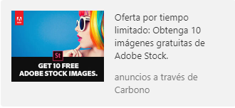
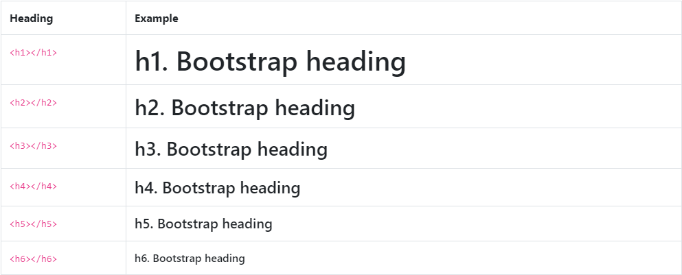

Reboot es una colección de elementos específicos de cambios CSS en un solo archivo, inicia Bootstrap para proveer una base elegante, coherente y simple sobre la que construir
El reinicio se basa en Normalize, proporcionando muchos elementos HTML con estilos algo opinionados usando solo selectores de elementos. El estilo adicional se realiza solo con clases. Por ejemplo, ejecutamos algunos estilos de <table> para una línea base más sencilla y, posteriormente, proporcionamos .table,.table-bordered, y más.
Estas son nuestras pautas y razones para elegir qué reemplazar e Reboot
Todos los elementos de encabezado (por ejemplo, <h1>) y <p> se restablecen para que se elimine su margin-top. A los encabezados se les ha añadido margin-bottom: .5rem y a los párrafos margin-bottom: 1rem para facilitar el espaciado.
Las tablas están ligeramente ajustadas al estilo <caption>s, contraen los bordes y garantizan una coherencia text-align en todo momento. Los cambios adicionales para bordes, relleno y más vienen con la clase .tables